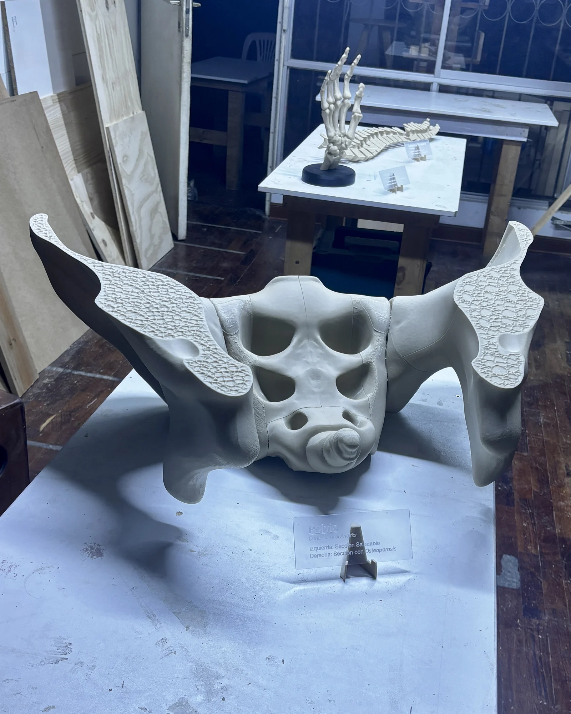
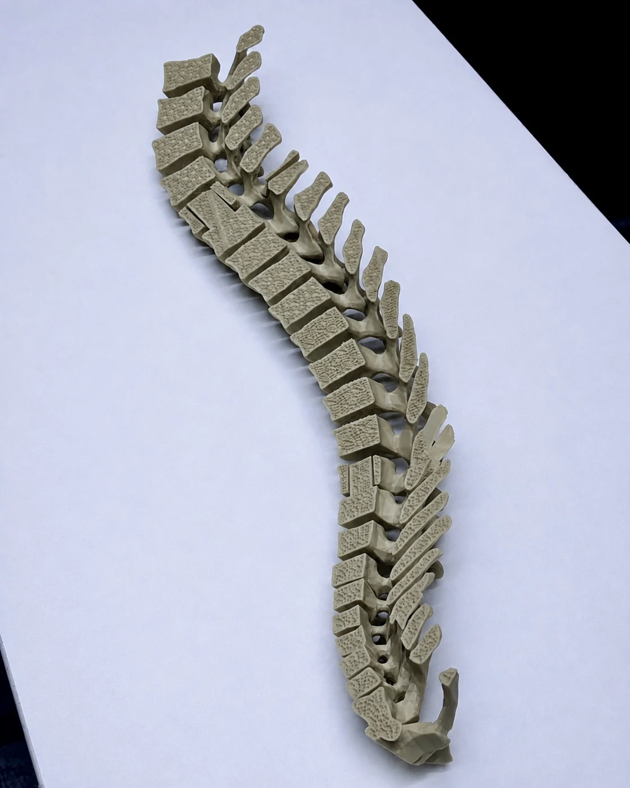
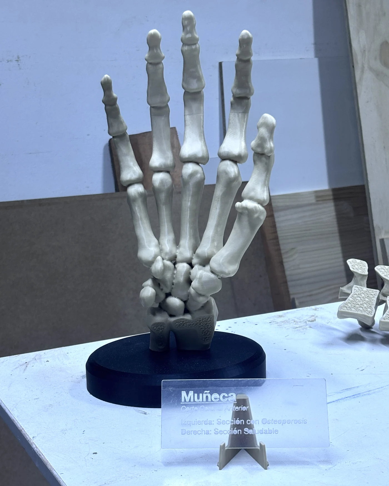

Hueso sano y hueso con osteoporosis, a escala.
Piezas anatómicas ampliadas para el CIAN XIV, congreso internacional de avances en nutrición organizado por INSA. Encargo de The Motion BTL.

Tres piezas, una misma lectura.
Columna, mano y pelvis. Cada una con un corte de sección: un lado sano, el otro con osteoporosis.

ColumnaCorte de sección

ManoMontada sobre base
PelvisTextura porosa
La textura es el mensaje.
La porosidad de cada sección se modeló para que la diferencia se note a simple vista y al tacto, sin necesidad de leer el cartel.
¿Tienes algo así?
Modelos didácticos, piezas de exhibición o material para un stand.